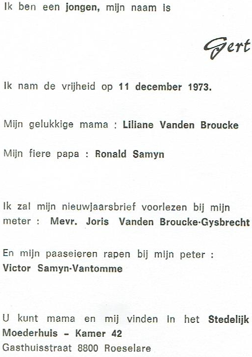

Baanbrekende Harttransplantatie in België in 1973
Op 27 augustus 1973 verrichtte de Brusselse professor Georges Primo een historische harttransplantatie in België. De 51-jarige Hortense Vrancken, ernstig ziek door een hartkwaal, ontving een nieuw hart van een 43-jarige donor. Deze primeur was niet zonder risico, maar Hortense overleefde de ingreep.
Hoewel haar immuunsysteem verzwakt was, herstelde ze redelijk. Helaas klopte het nieuwe hart slechts zes maanden. Deze baanbrekende stap opende de weg voor verdere ontwikkelingen in de medische wereld. Dankzij vooruitgang in medicijnen en technieken worden vandaag de dag nog steeds levens gered door harttransplantaties.
Historische Inhuldiging: World Trade Center Torens Verrijken de Skyline van New York
4 april 1973
De World Trade Center-torens, een architectonisch hoogstandje, werden vandaag met groots enthousiasme ingehuldigd. De imposante torens, ontworpen door Minoru Yamasaki en Emery Roth & Sons, zullen de skyline van Manhattan voor altijd bepalen. Met 110 verdiepingen belichamen ze menselijke innovatie en de drang naar nieuwe hoogten.
Dit ambitieuze project, geïnitieerd door de Port Authority of New York and New Jersey, bevat naast de torens ook een modern winkelcentrum en conferentiecentrum. Het complex staat symbool voor New York als een wereldwijd handelsknooppunt.
Met de World Trade Center-torens betreden we een nieuw tijdperk in de geschiedenis van New York City, een tijdperk van vooruitgang en samenwerking. De torens beloven niet alleen technische pracht, maar ook een eerbetoon aan menselijke creativiteit.
SPECIALE GEBEURTENIS VINDT PLAATS IN ROESELARE
11 December 1973
Op een koude winterdag, precies op 11 december 1973, zag een nieuw leven het daglicht. In een ziekenhuis in Roeselare verwelkomden twee jonge ouders met stralende ogen hun pasgeboren zoon. Deze bijzondere gebeurtenis markeerde het begin van een nieuw hoofdstuk in het leven van deze kleine jongen.

Op 18 november 1973 Schitterde de Eerste Autoloze Zondag in België als een Glimp van Solidariteit in de Oliecrisis
In een blijk van ongekende solidariteit ontstak België op 18 november 1973 een lichtend voorbeeld voor de wereld. De allereerste autoloze zondag vond plaats, een krachtig gebaar in reactie op de oliecrisis die de wereld in haar greep hield.
De oliekraan werd bewust gesloten in het Oosten als een boycot, een strategie om de olieprijzen in de Westerse landen te laten stijgen. In die gedenkwaardige wintermaanden van 1973 en 1974, ademde België zes keer diep tijdens autoloze zondagen.
Dit was niet de eerste keer dat België dergelijk vuur toonde. In 1956, naar aanleiding van de Suezcrisis, straalde het land al eerder met autoloze zondagen. De Suezcrisis, een conflict over het Suezkanaal, ontketende een oorlog in de Sinaï. Een geschiedenis die ons herinnert aan de kracht van eenheid en de wil om uitdagingen te trotseren.
Sinds die monumentale dag in 1973, bloeit het initiatief van autovrije zondagen jaarlijks op in Belgische steden zoals Brussel, Brugge, Lier, Mechelen, Antwerpen en Gent. Het blijft een symbool van gemeenschap, een dag waarop we samen ademruimte geven aan onze steden, en een positieve stap naar een duurzamere toekomst.
Triomf en Glorie: Club Brugge Kampioen in 1973
In het seizoen 1972-1973 rees Club Brugge als een stralende ster aan het Belgische voetbalfirmament. Onder leiding van trainer Norberto Höfling en met spelers als Raoul Lambert, Julien Cools en Birger Jensen, schitterde het team met vastberadenheid en passie.
Met een indrukwekkende 49 punten eindigde Club Brugge bovenaan de ranglijst, met een voorsprong van vijf punten op de tweede plaats. De stad Brugge vierde uitbundig, terwijl fans verenigd waren in vreugde.
De triomf in 1973 is een gouden bladzijde in de geschiedenis van Club Brugge. Het was niet alleen een kampioenschap, maar een manifestatie van wilskracht en toewijding aan het spel. Deze derde landstitel staat symbool voor een tijdperk van glorie en herinnert fans aan onvergetelijke momenten.
Dit kampioenschap heeft de naam van Club Brugge voor altijd in de geschiedenis van het Belgische voetbal gebeiteld.
Demis Roussos Betovert de Wereld met "Schönes Mädchen aus Arcadia" in 1973
Op 11 december 1973 vulde de ether zich met de betoverende klanken van Demis Roussos' "Schönes Mädchen aus Arcadia". Deze meeslepende melodie bracht niet alleen muzikale pracht, maar ook een vleugje magie naar de harten van luisteraars over de hele wereld.
Het nummer, gezongen in het Duits, vertelt het verhaal van een beeldschone vrouw uit Arcadia, een betoverend stukje Grieks paradijs. Roussos' stem, doordrenkt van emotie en warmte, voerde de luisteraars mee naar een wereld van romantiek en dromen.
Deze muzikale parel werd al snel een fenomeen en betoverde de hitlijsten. Mensen van alle leeftijden en achtergronden vonden troost en vreugde in de zoete klanken van Roussos.
Het succes van "Schönes Mädchen aus Arcadia" is een weerspiegeling van de tijdloze aantrekkingskracht van Demis Roussos' muziek. Zijn stem blijft een onuitwisbare herinnering aan een tijdperk van muzikale genialiteit en emotionele diepgang.
Dus, op deze dag, laten we samen terugblikken op het magische moment van 11 december 1973, toen Demis Roussos met zijn betoverende melodie de harten van velen veroverde en een blijvende indruk achterliet in de geschiedenis van de muziek.